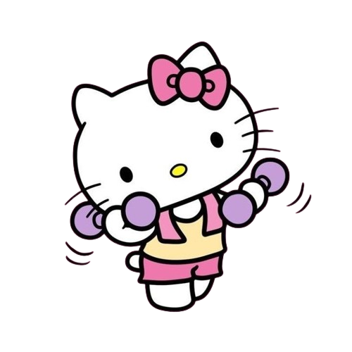

Sobre Nós
A Origem da Strong Kitty Nation
Nem todo herói usa capa. Alguns usam top de treino, seguram halteres cor-de-rosa e ronronam ao som de batidas de academia. Assim nasceu a Strong Kitty Nation, um movimento, uma marca, e principalmente, uma nação de gatinhos fortes e destemidos.
Tudo começou com Mila, uma gata malhada (literalmente) que vivia com sua humana, a personal trainer Dani, em um pequeno apartamento cheio de pesos e colchonetes. Mila não era uma gata comum: ela adorava imitar os treinos da dona. Enquanto Dani fazia agachamentos, Mila esticava as patas. Quando rolava um abdominal, lá estava ela, no tapete, de barriguinha para cima. As redes sociais adoraram, e logo surgiram milhões de seguidores apaixonados por essa dupla fitness.
Mas não parou por aí. A ideia tomou forma quando Dani percebeu que faltava no mercado algo que unisse força, estilo e fofura. Por que não criar uma marca de roupas e acessórios de academia inspirada nessa vibe divertida e determinada? Assim nasceu a Strong Kitty Nation, com o lema:
“Seja leve como um gato. Treine pesado como um leão.”
A marca vende roupas fitness, acessórios de treino e produtos lifestyle que combinam design ousado, conforto e claro — aquele toque felino que ninguém resiste. Desde tops com estampas de gatinhos musculosos até garrafas com frases motivacionais como “No pain, no purr”, a Strong Kitty Nation rapidamente se espalhou como uma febre entre quem ama malhar com personalidade.
Hoje, somos mais do que uma marca. Somos uma comunidade. Uma nação.
Uma legião de gatinhos (e gatonas) que não têm medo de suar a camisa e mostrar as garras quando o treino começa.
Junte-se à revolução felina. Junte-se à Strong Kitty Nation.
Porque aqui, cada ronronar é um grito de força.
